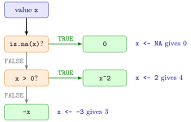

if–else Statement¶
Definition¶
An if–else statement runs one block of code or another, depending on a single logical condition:
if (condition) {
# code that runs when condition is TRUE
} else {
# code that runs when condition is FALSE
}
The condition must evaluate to exactly one non-missing logical value, TRUE or FALSE. The else block is optional. More than two cases are handled with else if (condition) { ... } blocks: R tests the conditions from top to bottom and runs only the first block whose condition is TRUE, or the final else block if none is. if and else are reserved words of the language, not functions.
Interpretation¶
An if–else statement is a fork in the road: R asks one yes-or-no question and takes one of the paths. It is the programming form of a piecewise definition such as for and otherwise, where the comparison x > 0 decides which formula applies.

The flowchart is the three-branch version in Example 2. A value of x enters at the top and leaves through exactly one of the green boxes: NA stops at the first test and gives 0, 2 passes the second test and gives 4, and -3 fails both tests and gives 3.
That order is a design decision. A missing value makes NA > 0 equal to NA, and if stops with an error when its condition is NA, so the is.na(x) test has to come before any comparison. The condition must also have length one: if (x > 0) for a vector x with two elements is an error, because a single fork cannot send different elements down different paths. For whole vectors use the element-wise ifelse(), or put the if inside a for loop that visits the elements one at a time.
Inside loops and your own functions, if checks inputs and stops a recursion at its base case; conditions are built with logical operators.
A frequent slip is writing if (x = 0) instead of if (x == 0): a single = is assignment, and R rejects it inside if with a syntax error. Another is starting a new line with else after the closing brace of the if block when typing at the top level of a script; R then thinks the statement has already ended. Keep } else { on one line.
Key Results¶
- The condition must be one logical value. A condition of length greater than one is an error (since R 4.2.0), and a missing condition gives the error
missing value where TRUE/FALSE needed. - In an
if/else if/elsechain, conditions are tested in order and only the first block whose condition isTRUEruns; later conditions are not evaluated. ifis not vectorized. To apply a rule element by element useifelse()or a loop.- The statement has a value, namely the value of the block that ran, so
y <- if (x > 0) x^2 else -xis valid R. - At the top level,
elsemust start on the same line as the closing brace}of the preceding block.
Examples¶
1. A piecewise function. For if and otherwise:
With x <- -3 the condition is FALSE and the result is 3. Since for , this is never negative, like the absolute value.
2. Three branches and a missing value. To return 0 when x is missing, test for that first:
Without the first branch the statement would evaluate if (NA > 0) and stop with missing value where TRUE/FALSE needed.
3. Pitfall: a vector as condition. For x <- c(-2, 2) the comparison x > 0 is FALSE TRUE, two values:
x <- c(-2, 2)
if (x > 0) {
x^2
} else {
-x
}
#> Error in if (x > 0) { : the condition has length > 1
The vectorized answer 2 4 comes from ifelse(x > 0, x^2, -x).
4. Several pieces inside a loop. The function
is evaluated at , and by visiting the elements one at a time:
x <- c(-2, 1, 3)
y <- rep(0, length(x))
for (i in 1:length(x)) {
if (x[i] < 0) {
y[i] <- x[i]^2 + 5 * x[i]
} else if (x[i] <= 2) {
y[i] <- x[i] + 3
} else {
y[i] <- x[i]^2 + 4 * x[i] - 7
}
}
y
#> [1] -6 4 14
The second condition does not need 0 <= x[i]: R only reaches it when x[i] < 0 was FALSE.
Prerequisites¶
Related Concepts¶
Sources¶
- Programming for EOR · Week 3
- Lecture 3, Part 1 Loops and Control Flow, sections "Control Flow with if–else" and "Extending if–else beyond two branches"; Solutions Week 3, Part 1 Exercise 4
Aliases: if, else, else if, if statement, if else, conditional statement, branching Keywords: branching on one condition, else if chain, condition of length one, piecewise function
Last updated: 10 November 2026 16:43
if–else Statementbreak, next and repeatDefault Arguments in Your Own FunctionsVectorized ifelse()Recursive FunctionComparison OperatorsLogical OperatorsMissing Valuesfor Loopwhile LoopWriting FunctionsAbsolute Value